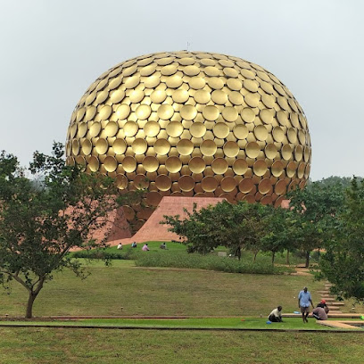
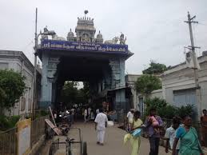
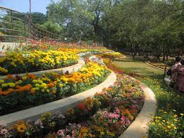
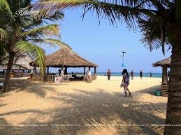
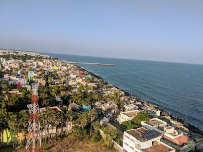

CITIES AND PLACES
Puducherry
- Auroville: An experimental township known for its unique community living and the Matrimandir, a meditation center.
- Promenade Beach: A popular beach ideal for evening strolls, lined with historic monuments and vibrant cafes.
- Sri Aurobindo Ashram: A spiritual community founded by Sri Aurobindo, offering a peaceful retreat for meditation.

- Basilica of the Sacred Heart of Jesus: An iconic church known for its stunning Gothic architecture and vibrant stained glass windows.
- Chunnambar Boat House: A scenic spot for boat rides to Paradise Beach, surrounded by lush greenery.
- Puducherry Museum: A museum showcasing the history, culture, and heritage of Puducherry with various artifacts.
Auroville
- Matrimandir: The central structure of Auroville, serving as a meditation center and symbol of the city.
- Auroville Beach: A serene beach ideal for relaxation and enjoying the tranquil surroundings.
- Auroville Visitor Center: A place where visitors can learn about Auroville's philosophy, projects, and activities.

- Unity Pavilion: A space dedicated to promoting the vision of Auroville, showcasing its diverse cultures and communities.
- Auroville Botanical Gardens: A beautiful garden focusing on the preservation of native plant species and sustainable practices.
- Auroville Art Gallery: A gallery featuring works by local artists, reflecting the community's creativity and spirit.
Puducherry Beach
- Promenade Beach: A scenic beach lined with palm trees, perfect for morning walks and enjoying sunsets.
- Auroville Beach: A tranquil beach known for its clean sands and serene atmosphere, ideal for relaxation.
- Serenity Beach: A quieter beach popular for surfing and beach activities, with beautiful views of the sea.

- Rock Beach: A popular beach area with restaurants and shops nearby, great for an evening out.
- Chunnambar Boat House: A beautiful spot for boating and enjoying the backwaters, surrounded by lush greenery.
- Paradise Beach: A pristine beach accessible by boat, known for its soft sand and calm waters.
Chunnambar Boat House
- Chunnambar Boat House: A scenic location offering boat rides along the backwaters, ideal for picnics and relaxation.
- Nearby Beaches: Enjoy the tranquil beaches close to the boat house, perfect for swimming and sunbathing.
- Water Sports: Engage in various water activities like kayaking and jet skiing for an adventurous experience.

- Shacks and Restaurants: Enjoy local cuisine at nearby shacks and restaurants offering fresh seafood.
- Nature Walks: Explore the lush surroundings and enjoy nature walks along the backwaters.
- Photography Opportunities: Capture stunning views of the sunset and the serene landscape.
Puducherry Museum
- Puducherry Museum: A museum showcasing the rich heritage and history of Puducherry, featuring artifacts from the French colonial period, sculptures, and paintings.
- Raj Niwas: The official residence of the Lieutenant Governor, known for its beautiful gardens and colonial architecture.
- Gandhi Memorial: A memorial dedicated to Mahatma Gandhi, located near the seafront, commemorating his visit to Puducherry.

- Auroville: An experimental township promoting peace and harmony, known for its Matrimandir and community living.
- French War Memorial: A memorial honoring the soldiers who fought for France during World War I, located in Bharathi Park.
- Botanical Garden: A beautiful garden featuring a variety of plant species, ideal for a peaceful retreat.
Temples and Churches
Sri Manakula Vinayagar Temple
- Overview: A famous Hindu temple dedicated to Lord Ganesha, known for its stunning architecture and spiritual significance.
- Significance: The temple attracts thousands of devotees and tourists, especially during festivals.
- Architecture: Features intricate carvings and colorful sculptures, showcasing South Indian temple architecture.

- Festivals: The temple is known for celebrating festivals like Ganesh Chaturthi with great fervor.
- Visiting Hours: Open daily for devotees, with special ceremonies during festivals.
- Nearby Attractions: Located close to other famous sites like the Aurobindo Ashram and the beach.
Basilica of the Sacred Heart of Jesus
- Overview: A stunning Roman Catholic basilica known for its Gothic architecture, beautiful stained glass windows, and serene atmosphere.
- History: Built in the 19th century, this basilica is a significant pilgrimage site, attracting visitors from around the world.
- Architecture: The church features intricate designs, high ceilings, and beautiful altars, showcasing the artistry of its time.

- Visiting Hours: Open daily from morning until evening, with special masses on Sundays.
- Significance: The basilica is an important center for faith and devotion, particularly during the Feast of the Sacred Heart.
- Location: Located in the heart of Puducherry, it is easily accessible for tourists and locals alike.
Museums and Art Galleries
Puducherry Museum
- Puducherry Museum: A museum showcasing a rich collection of artifacts, sculptures, and antiques reflecting the cultural heritage of Puducherry.
- Art & Culture Centre: A hub for local art, featuring exhibitions from various artists and cultural events throughout the year.
- French Institute of Pondicherry: A research center and museum dedicated to the history and culture of the region, offering exhibitions and educational programs.
- Romain Rolland Library: A historic library with a vast collection of books and manuscripts, offering a quiet place for reading and research.
- Barathi Park: A beautiful park adjacent to the museum, ideal for leisurely walks and enjoying the local flora.
- Chunnambar Boat House: Not far from the museum, offering boat rides and a scenic view of the backwaters.
Aurodhan Art Gallery
- Aurodhan Art Gallery: A vibrant gallery showcasing contemporary Indian art, featuring works from various artists and hosts regular exhibitions.
- Art Workshops: The gallery often conducts workshops to promote art education and creativity among visitors.
- Unique Collections: The gallery displays a diverse range of paintings, sculptures, and mixed media art, making it a must-visit for art enthusiasts.
- Cultural Events: The gallery frequently hosts cultural events, art fairs, and artist talks, enhancing the community's appreciation for art.
- Gallery Shop: A shop within the gallery offers art-related items and souvenirs, perfect for visitors looking to take a piece of art home.
Beaches
Paradise Beach, Puducherry
- Beach Overview: A serene and beautiful beach known for its soft golden sands and clear blue waters, perfect for relaxation and leisure activities.
- Water Sports: Offers various water sports like kayaking, jet skiing, and banana boat rides for adventure enthusiasts.
- Accessibility: Reachable by a scenic boat ride from Chunnambar Boat House, enhancing the overall experience.

- Relaxation Spots: Ideal for sunbathing and enjoying the picturesque views of the Arabian Sea.
- Cafes and Shacks: Various food shacks and cafes nearby offering local cuisine and refreshments.
- Photography: A perfect spot for photography enthusiasts to capture stunning sunsets and scenic landscapes.
Auroville Beach
- Auroville Beach: A serene beach known for its clean sands and tranquil atmosphere, perfect for relaxation and swimming.
- Nearby Attractions: Explore the Auroville community, Matrimandir, and various eco-friendly initiatives in the area.
- Activities: Enjoy beach sports, yoga sessions, and meditation workshops offered by local groups.
- Beachfront Cafes: Enjoy local cuisine and fresh seafood at nearby beachfront cafes and restaurants.
- Sunset Views: Auroville Beach is known for its breathtaking sunsets, making it a perfect spot for evening relaxation.
- Wildlife Watching: Look out for various bird species and marine life along the beach.
Other Attractions
Botanical Garden
- Location: Located in the heart of Puducherry, the garden spans over 22 acres.
- Features: Home to a wide variety of tropical plants, trees, and a beautiful layout that includes a pond and walking paths.
- Activities: Ideal for nature walks, photography, and leisurely picnics, making it a perfect spot for families and tourists.
- Visiting Hours: Open from 10 AM to 5 PM, making it accessible for morning and evening visits.
- Entry Fee: Minimal entry fee, making it an affordable option for all visitors.
- Flora: Home to numerous species of plants, including medicinal plants and exotic flowers.
Chunnambar Boat House
- Chunnambar Boat House: A scenic location offering boat rides along the backwaters, perfect for nature lovers and adventure seekers.
- Activities: Enjoy paddle boating, speed boating, and houseboat cruises, with options for picnics on the serene beaches.
- Location: Situated just a short drive from Puducherry, it’s a great getaway for families and friends.
Festivals and Events
Puducherry International Film Festival
- Event Overview: An annual film festival celebrating international and regional cinema, showcasing a diverse range of films.
- Venue: Various locations across Puducherry, including theaters and cultural centers.
- Activities: Screenings, panel discussions, workshops with filmmakers, and cultural events.

- Date: Typically held in December, check the official website for specific dates.
- Participation: Open to filmmakers, enthusiasts, and the general public.
- Highlights: Awards for various categories, networking opportunities, and a platform for independent filmmakers.
Cuisine
French Bakeries and Cafes in Puducherry
- Pondicherry Bakery: Renowned for its delicious pastries, breads, and traditional French treats.
- La Café: A charming café offering a variety of French delicacies and a beautiful view of the beach.
- Le Café: Known for its coffee and fresh baked goods, perfect for a relaxing afternoon.
- La Maison Rose: A picturesque café with a selection of delectable desserts and artisanal breads.
- Chateau de Pondicherry: A quaint spot known for its pastries, chocolates, and delightful ambiance.
- Café des Arts: A popular hangout spot offering a mix of French and local dishes in a vibrant setting.